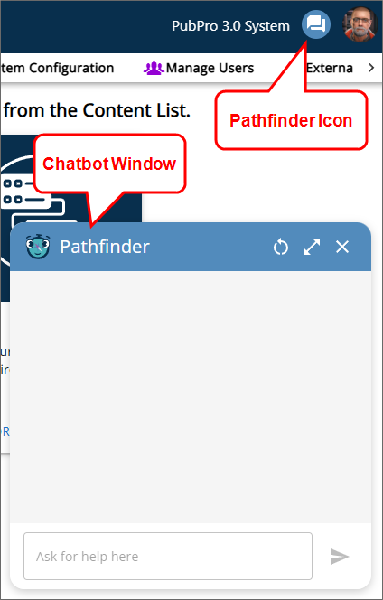
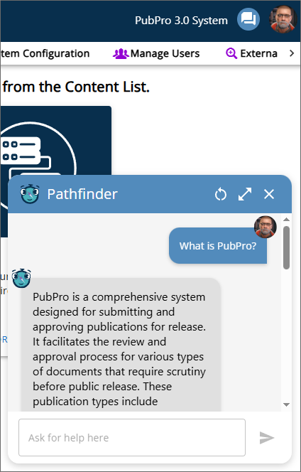

If you are using Process Director v6.0.300 or below, you can view the user interface documentation for your version of the product on the User Interface (Legacy) topic.
If you are using Process Director v6.0.300 or below, you can view the user interface documentation for your version of the product on the User Interface (Legacy) topic.
If you are using Process Director v6.0.300 or below, you can view the user interface documentation for your version of the product on the User Interface (Legacy) topic.
 This topic discusses a feature that is under active development, and is subject to change without notice.
This topic discusses a feature that is under active development, and is subject to change without notice.
For Process Director v6.1.500 and higher, users of selected Cloud installations may be configured to use Pathfinder via the Pathfinder Variables page of the IT Admin area. Pathfinder is the name BP Logix has given to an online help system that uses Microsoft's Azure AI Foundry to provide an online help system within the product, based on the published product documentation. Pathfinder can provide detailed information about Process Director, as well as any custom applications that have been created on your system.
Pathfinder is a separately licensed component, and administrators will need to work with BP Logix to enable and configure Pathfinder for use. Pathfinder can be trained on both Process Director's documentation, as well as on any documentation you may have for complex applications that you create on your installation. Please speak with your BP Logix Account Manager if you have any questions about Pathfinder licensing or costs.
From the user's perspective, Pathfinder will appear as an additional icon placed to the left of the User Profile icon. When clicked, this icon will open a chatbot window for the Pathfinder AI agent.

Using the chatbot window users can ask questions about the product, which will appear as text responses in the chatbot window.

Pathfinder installations will also have an additional Form control available to use Pathfinder on an individual form. Please See the Pathfinder Control topic for more information.
For information about how different users see the interface, and how different UI elements are displayed or accessed, please see the Access Levels topic. You can also navigate back to the main Navigator 2 UI topic.
Please refer to the Common UI Elements topic to learn about other common user interface conventions.